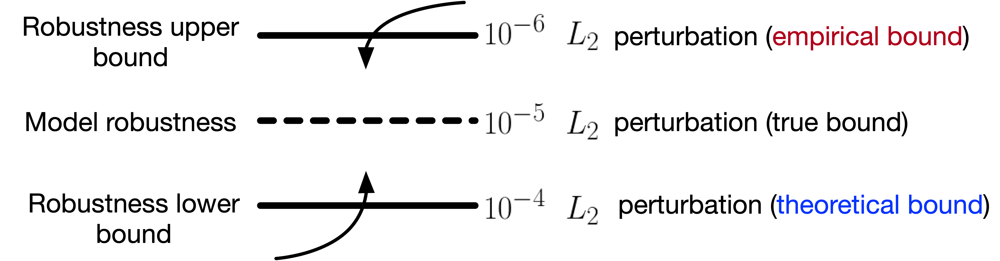
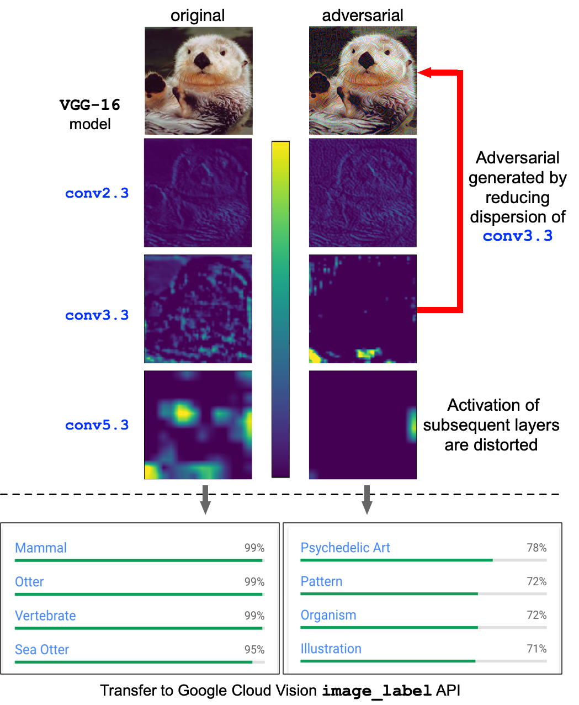
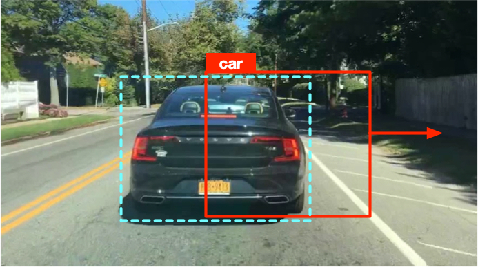
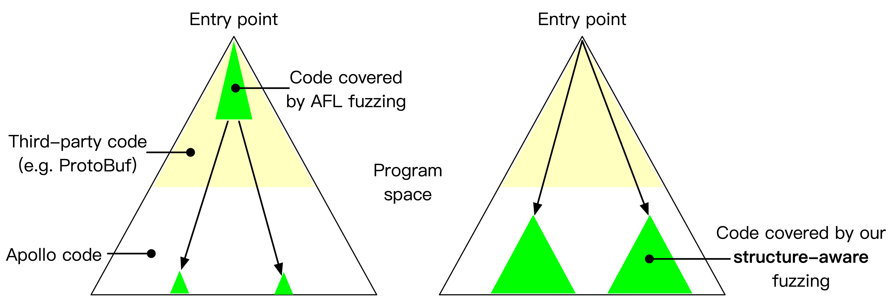
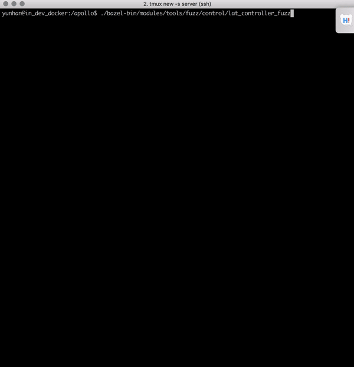
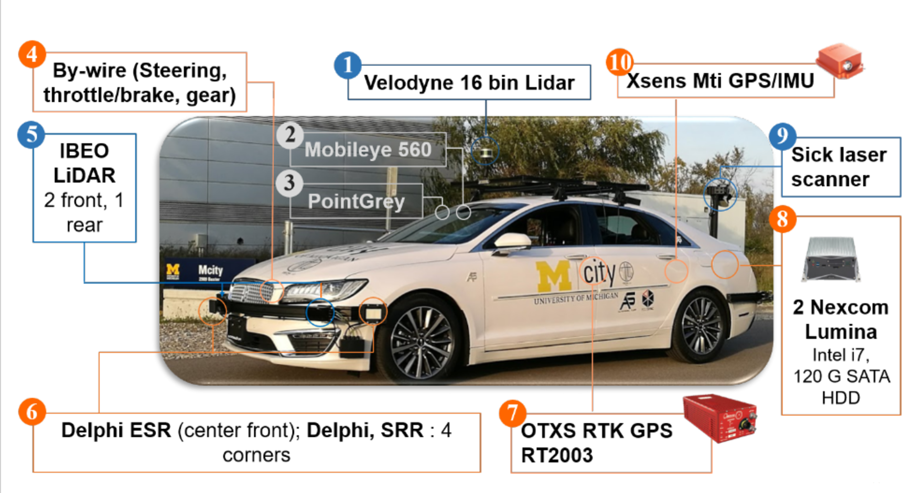
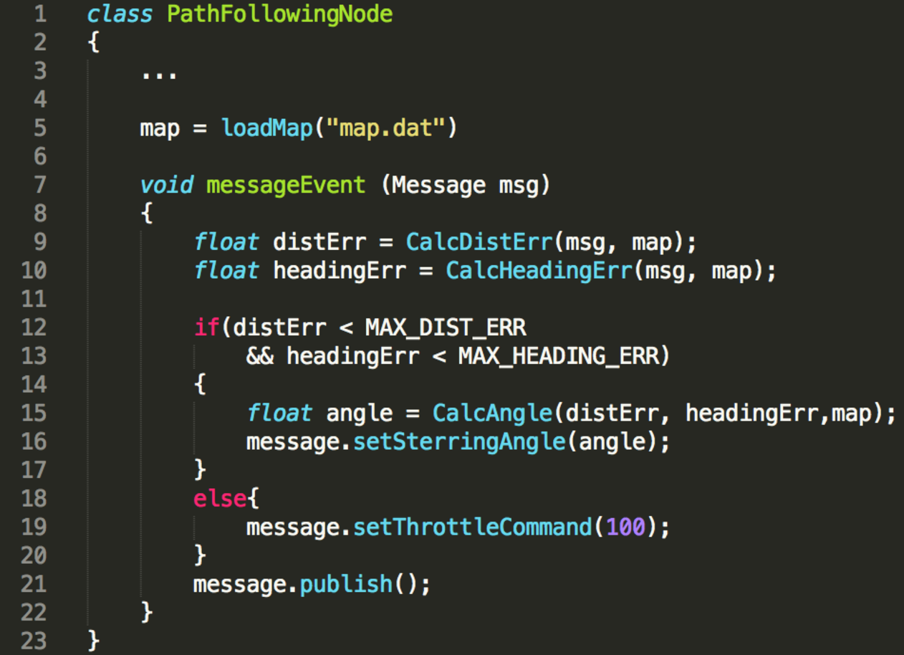
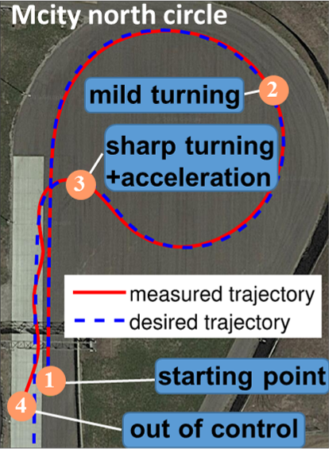

DNN Robustness Benchmark
Perceptron Benchmark [code] is an adversarial toolbox for benchmarking various safety and security properties of deep neural networks. It evaluates DNN robustness based on the minimum perturbation required to fool the target model, and approaches the true robustness by (1) minimizing the empirical upper bound found by applying state-of-the-art attacks, and (2) maximizing the theoretical lower bound found by linear approximaion based verification methods. It is designed to be agnostic to the deep learning frameworks the models are build on, and supports image classification and object detection models on PyTorch, Tensorflow, Keras, and cloud APIS. Documentation is available on [readthedoc]

Adversarial Machine Learning
We prototyped a series of adversarial attacks in self-driving car, and machine learning as a service (MLaaS) scenarios, including:
► Physical adversarial patch that fools object detection models
► Fingerprint attack against commercial MLaaS APIs
► Adversarial examples that transfer across real-world CV tasks
► Adversarial attack against multiple object tracking
More information can be found in my [publications].
 |
 |  |
| Physical adversarial patch against object detector | Cross-task adversarial examples generated with dispersion reduction | Adversarial example that fools object tracking |
Structure-aware Fuzzing
Libprotobuf-mutator for Apollo [code] is a tool designed to fuzz large programs that consume highly-structured data, e.g., Baidu Apollo autonomous car platform. Traditional fuzzers such as AFL and libfuzzer that mutate inputs using bit-wise operations are very ineffective when the input space is huge and structured. We implements a structure-aware fuzzing tool that learns input format from protocol buffers, and efficiently generate inputs that conform with program specs to enable exploration of deeper program logic. Now integrated in the Apollo project. [pull request 1]. [pull request 2].
|  |  |
| Struct-aware fuzzing helps bypass shallow format checks to reach deeper program logic | Finding a null pointer dereference bug Apollo using structure-aware fuzzing |
Autonomous Vehicle Application Security
The OpenCAV project. Our team in U-M has open the development of the autonomous vehicle (AV) to faculties, researchers, students and industrial partners, so that they can test their self-driving functionalities on the road. To ensure the security and safety of the vehicle under the threat model of untrusted 3rd party code that can potentially be flawed, vulnerable or even malicious, we propose the AVGuard approach that brings the static and dynamic vetting of various self-driving functionalities into the testing of AV. More detail can be found in the [paper].
|  |  |  |
| The open autonomous vehicle we tested on | An example path-following self-driving app | The vehicle trajectory when testing the app |
The TrafficNet project. The enormous effors spent on collecting naturalistic driving data in recent years have resulted in an expansion of publicly available traffic datasets. However, we found that many attempts to utilize these datasets have failed in practice due to a lack of usability concern. We propose TrafficNet, a large-scale and extensible library of naturalistic driving scenarios, aiming at bridging the gap between research datasets and practically usable information for vehicle engineers and researchers. TrafficNet opens not only the scenario library but also the source code of these categorization methods to the public, which will foster more spphisticated and accurate scenario-based categorization algorithms to advance the intelligent transportation research. More detail can be found in the [paper]
Open Port Security
Media coverage: ADT Magzine , TechRepublic , NDTV , International Business Times , Mashable , Bleeping Computer , Digital Trends , Android Headlines , AXIOS , etc.
We design and implement a static analysis tool that can effectively identify and characterize vulnerable open port usage in Android applications. Using this tool, we discovered over 400 vulnerable apps, which can be exploited to cause highly-severe damage such as remotely stealing contacts, photos, and also performing sensitive actions such as malware installation and malicious code execution.
Please visit our [website]for more information.
Featured attack demo: Session hijacking of AirDroid (CVE-2016-5227).
Smart Home Application Security
We developed an app patching based mechanism to add security logic to commodity SmartApps, which enables the verification of an important property called "Contextual Integrity" in the app runtime. We demonstrate that it introduces only minimal performance overhead, and won't risk much user habituation or annoyance.
Please visit our [website] for some sample malicious SmartApps we created for testing purpose.
Android Local Socket Security
We propose a tool called SInspector to expose potential security vulnerabilities in using Unix domain socket. Our analysis revealed some serious vulnerabilities in popular apps and system daemons.
Please visit our website for more information.
Featured attack demo: Privilege Escalation exploiting KingRoot v4.8.2.
Off-path Packet Injection Vulnerability Detection
We develop a tool called PacketGuardian that supports implicit flow tainting for Linux kernel code base in C. We use PacketGuardian on 6 popular protocol implementations of TCP, SCTP, DCCP and RTP, and uncover new vulnerabilities in Linux kerneal TCP, as well as 2 out of 3 RTP implementations.
Please visit our website for more information
Cross-layer Diagnosis for Voice Call
Our research prototype of cross-layer diagnosis tool on mobile device based on my Mobicom 2015 paper was productized by T-Mobile to automate the problem diagnosis with crowd-sourced data.